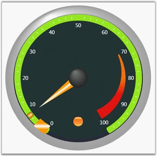
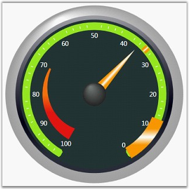

Scales are those using which we can control the element placements and the value ranges. Multiple scales can be added to circular gauge by using its different properties.
Customizing Scales
You can customize scales added to the Circular Gauge by using the properties listed in the following table.
Table 6: Property Table
|
Property |
Description |
|
Minimum |
To set the Minimum value for the circular Scale. Default value is set to 0. |
|
Maximum |
To set the Maximum Value for the circular Scale. Default value is set to 0. |
|
MinorIntervalValue |
The value for the major intervals could be mentioned using this property. Default value is set to 0. |
|
MajorIntervalValue |
The value for the minor intervals could be mentioned using this property. Default value is set to 0. |
|
StartAngle |
To set the Start Angle for the circular scale. Default value is set to 0. |
|
GapSweepAngle |
To set the gap sweep angle for the circular scale. Default value is set to 0. |
|
ScaleBarSize |
Used to set the size for the scale bar. Default value is set to 0. |
|
Radius |
Using which we can set the radius for the circular scale. Default value is set to 0. |
|
BorderWidth |
Border thickness of the circular scale can be given using this property. Default value is set to 0. |
|
BorderBrush |
Using which the border brush values can be given. Default value is set to Transparent. |
|
BackgroundBrush |
Using which the background brush for the circular scale can be given. Default value is set to Transparent. |
|
ScaleDirection |
Using this property, the Scale direction can be changed from left-to-right or vice versa. It also changes the alignment of the children accordingly. Default value is set to Clockwise. |
Following code example illustrates how to add scales to the Circular Gauge.
|
[XAML]
<my:CircularGauge Name="circularGauge1" > <my:CircularGauge.Scales> <my:CircularScale BorderWidth="3" GapSweepAngle="300" MajorIntervalValue="10" Maximum="100" Minimum="0" MinorIntervalValue="2" Radius="120" ScaleBarSize="10" ShadowOffset="0" StartAngle="120" ScaleDirection="CounterClockwise"> </my:CircularScale> </my:CircularGauge.Scales> </my:CircularGauge> |
|
[C#]
private CircularScale m_scale; m_scale = new CircularScale(); m_scale.ShadowOffset = 1; m_scale.Minimum = 0; m_scale.Maximum = 100; m_scale.MinorIntervalValue = 2; m_scale.MajorIntervalValue = 10; m_scale.StartAngle = 120; m_scale.GapSweepAngle = 300; m_scale.ScaleBarSize = 5; m_scale.Radius = 95; m_scale.BorderWidth = 1.2; m_scale.BorderBrush = Brushes.PeachPuff; m_scale.ScaleDirection = ScaleDirection.CounterClockwise; m_scale.BackgroundBrush = Brushes.Plum; this.circularGauge1.Scales.Add(m_scale); |

Figure 27: Circular Gauge with Clockwise Scale

Figure 28: Circular Gauge with CounterClockwise Scale
 Adding Multiple
Scales
Adding Multiple
Scales